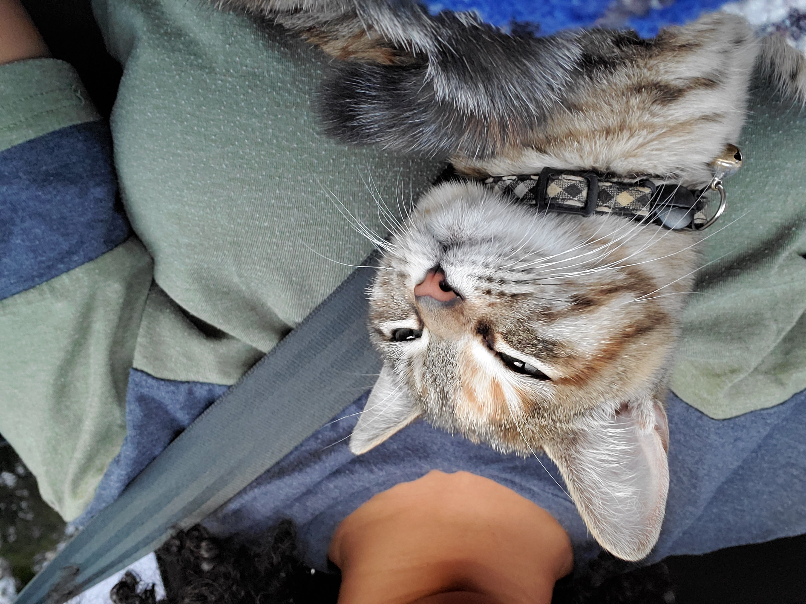
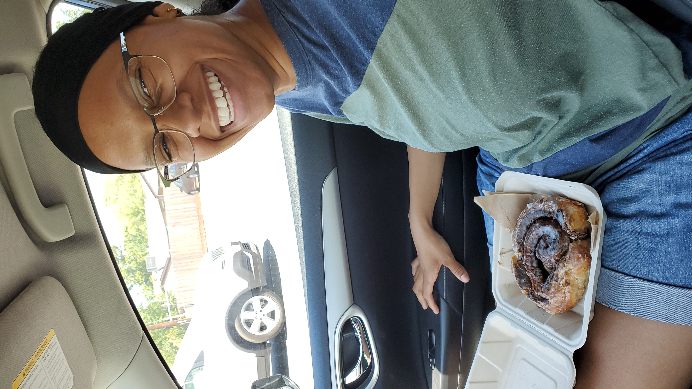
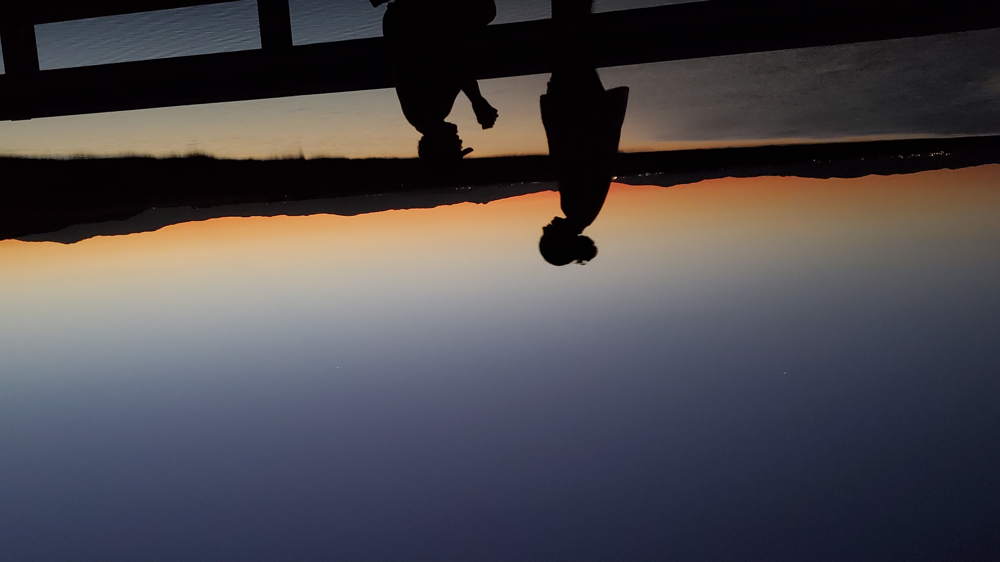
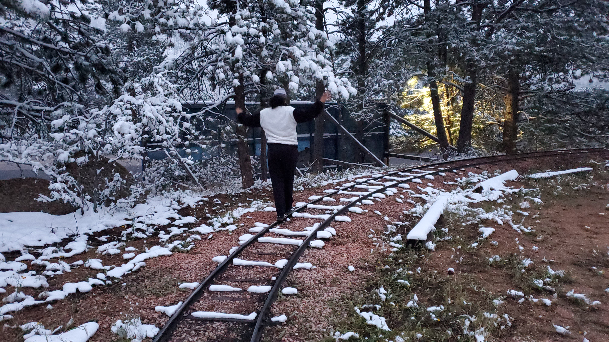
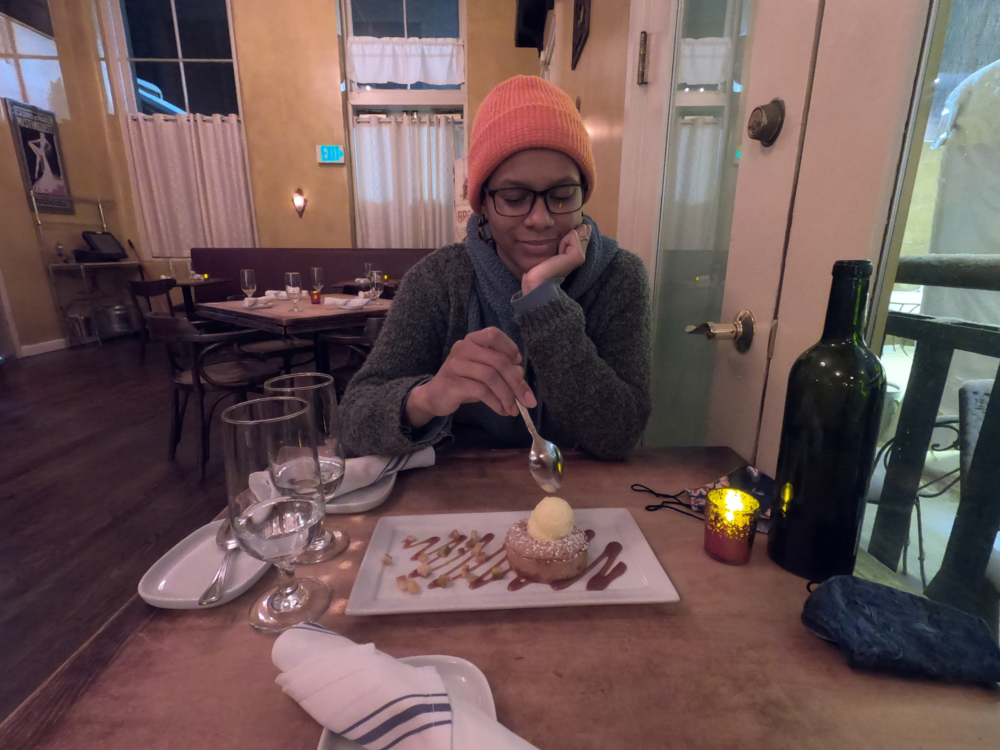
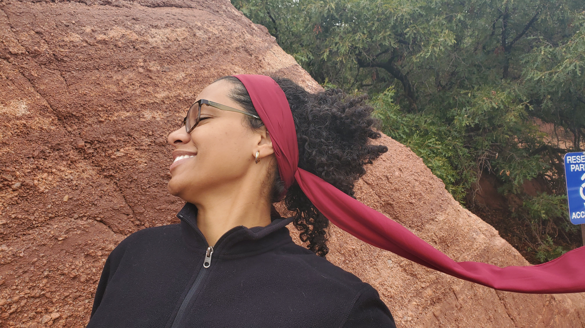
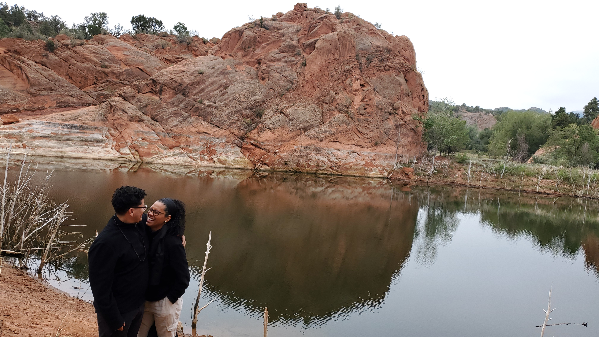

Photo Gallery

Leah rescued this cat and named her Tura

Cinnamon roll from Bacon & Butter in Sacramento

Picture of her sunset proposal in Suisun



Leah wandering in the snow in Colorado

Leah at a little french diner on her honeymoon trip in Denver

Leah just being beautiful and goofing with her new head scarf

Leah and her husband enjoying the view and eachother